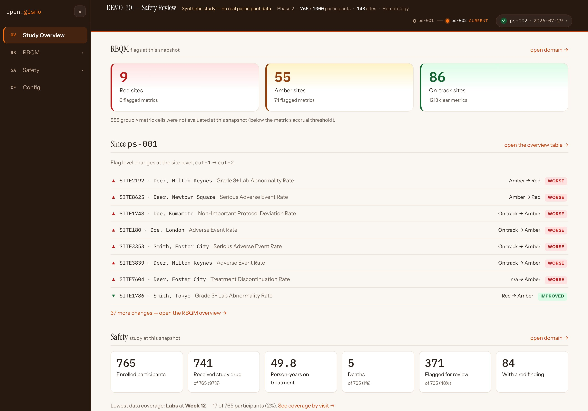
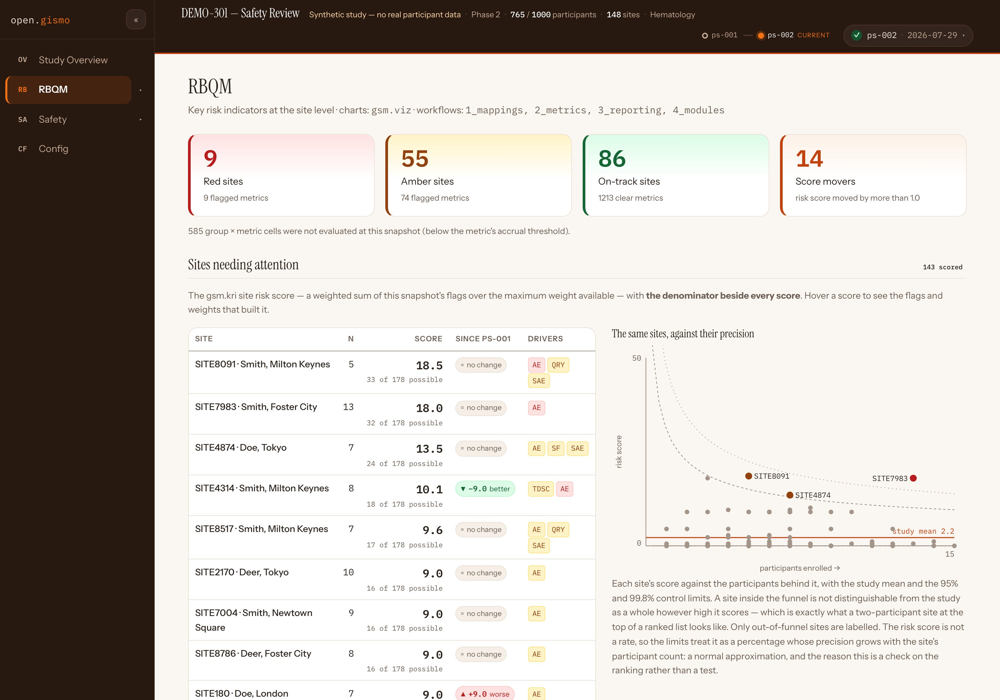
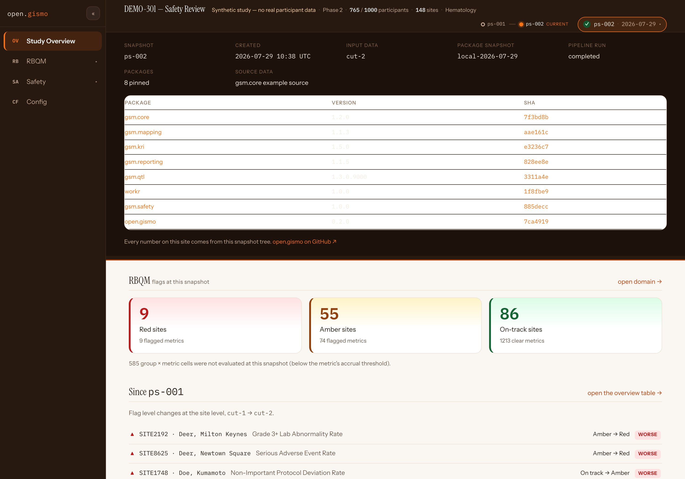
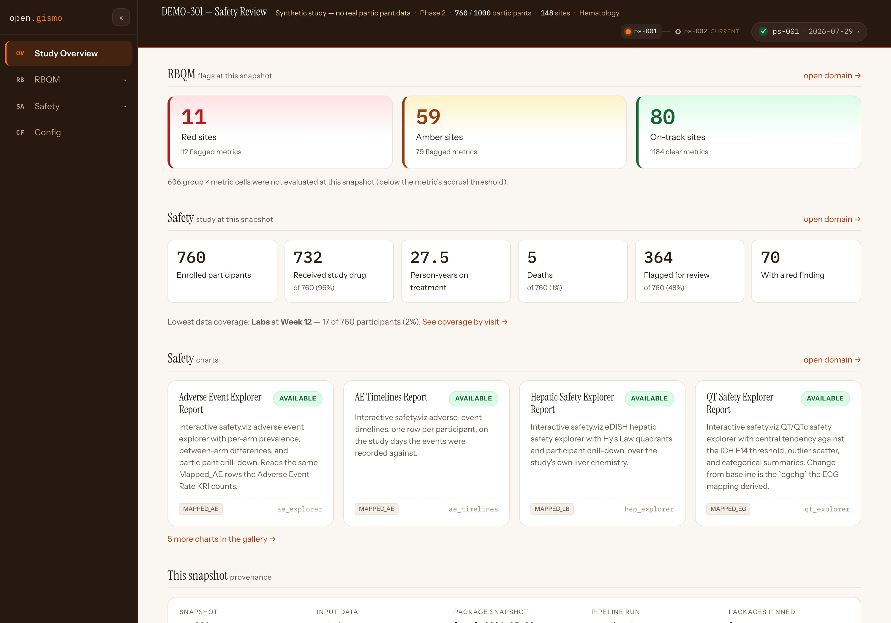
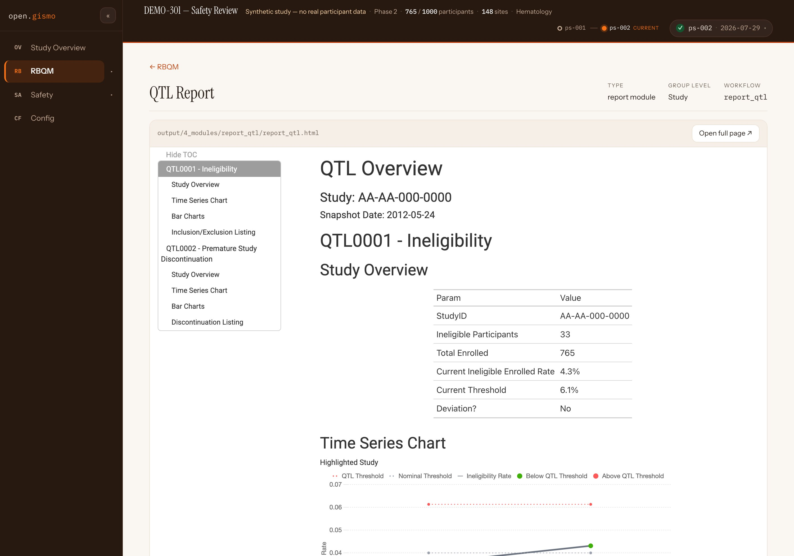

open.gismo release review 2026-08-15
What v0.2.0 delivers, annotated
open.gismo becomes a local-first RBQM platform with a real study site: run the full gsm pipeline against a plain project folder — no GitHub required — and read the results as a study site with snapshot history, provenance, and RBQM and Safety domains. Everything below is captured from the live DEMO-301 deployment, which this release's engine built end to end: two data cuts, one recorded script.
first release on jwildfire/open.gismo since v0.1.0 R-CMD-check + site-tests green runs live as DEMO-301 promotes dev → main via the v0.2.0 RC
The study site
The site stops being a workflow explorer and becomes a study site. A masthead carries the study identity from config, a snapshot timeline, and a provenance chip; a collapsible sidebar organizes the study into domains — Study Overview, RBQM, Safety, Config — each nesting its own reports, charts and metrics from the study's registry.

1 2 3 4 5- 1 The masthead is one dense row: study, phase, enrollment, sites, therapeutic area
- 2 The snapshot timeline — one dot per cut, ps-002 current
- 3 RBQM flags at this snapshot, with unevaluated cells stated, not hidden
- 4 Since ps-001: site-level flag movements, worse and improved, each named
- 5 The Safety strip: enrollment, exposure, deaths, flagged-for-review
Why it matters
The overview answers the monitor's first three questions — what changed, where, and how bad — before a single click. Changes are computed against the previous snapshot because the engine now accumulates snapshot history; on a one-snapshot study this section simply is not shown.
Try it
Open the DEMO-301 Study Overview- Read the change list: every row names its site, metric, and direction.
- Collapse the sidebar with « — the rail remembers the choice.
- Follow open domain → into RBQM or Safety.
Sites that need attention, beside their precision
RBQM leads with the ranked site risk-score table — the denominator beside every score, contributing flags and weights on hover, a since-last-snapshot change chip, low-precision sites dimmed rather than ranked — and, beside it, a funnel plot of the same sites against their precision, with the study mean and 95% / 99.8% control limits. Ranked lists of institutions are what funnel plots were proposed to replace; showing both is the point.

1 2 3- 1 Every score carries its denominator — "33 of 178 possible" — not a bare number
- 2 Change chips are a glyph and a word, only when the move clears a noise threshold
- 3 Only out-of-funnel sites are labelled; a high score inside the funnel is not a finding
Why it matters
A two-participant site at the top of a ranked list looks alarming and means nothing. Reading the ranking against the funnel keeps the score's precision in the same glance, and the on-page text explains the check honestly — a normal approximation on the ranking, not a test.
The group overview table below it is the real gsm.viz widget — the same table a gsm.kri report renders — over this snapshot's reporting layer, with a Site / Country switch. The QTL panel renders the study-level acceptable ranges in ICH E6(R3)'s three states, deliberately apart from the site KRIs.
Try it
Open RBQM on DEMO-301- Hover a score — the flags and weights that built it appear.
- Find SITE4314's −9.0 better chip, then find it in the funnel.
- Scroll to the group overview table and flip Site / Country.
- Open Metric charts and Metrics from the nested sidebar.
A Safety domain that leads with denominators
Before any finding, the Safety overview states what everything else is read against: census and exposure — enrolled, randomised, dosed, person-years, deaths — then data coverage by visit, the figure that decides whether a quiet visit is reassuring or empty. Below it: the participants the safety metrics flagged for review, and the gallery of rendered safety.viz charts, each opening the live renderer.
 1
2
1
2
- 1 The denominators, stated first — pooled across arms, and saying so
- 2 Week 12 labs: 17 of 765 (2%) — a quiet week that is missing data, not a clean result
Why it matters
Safety review's classic failure is reading absence of findings as absence of risk. Making coverage a first-class display — and wiring the overview's "lowest coverage" line straight to it — puts the caveat before the conclusion.
The participant review queues come from the three gsm.safety participant-level metrics this pipeline now runs (Hy's Law candidate, QTcF prolongation, serious/related AE) — see the gsm.safety v1.1.0 demo for that half of the story.
Try it
Open Safety on DEMO-301- Read the census tiles, then scroll to coverage by visit.
- Open Hy's Law Candidate — the flagged-participant queue.
- Open a chart from the gallery — the live safety.viz renderer, over this snapshot's data.
Provenance, and time travel
Every number on the site comes from a snapshot tree, and the site says so. The provenance chip expands into the snapshot's reproducibility record — input data version, package snapshot, pipeline status, and the pinned version + SHA of every package in the run. Pick a different dot on the timeline and the whole app re-points at that snapshot's tree.

The reproducibility record. Eight packages pinned with SHAs — gsm.core through open.gismo itself — plus the input data version and pipeline status. "Every number on this site comes from this snapshot tree" is a claim the chip lets you check.

Time travel. One click on ps-001 and the app is the earlier cut: 760 enrolled, 11 red sites, its own provenance. The snapshot date itself now derives from the data cut, not the clock — two cuts run on the same day stay distinguishable.
Why it matters
RBQM outputs get quoted in audits. A site that can name the exact package SHAs and input version behind any number — at any historical snapshot — is the difference between a dashboard and a record.
Try it
Open DEMO-301- Click the provenance chip (top right) and read the pinned table.
- Click ps-001 on the timeline — watch every tile re-derive.
- Copy any URL: the hash carries the view and its snapshot.
The local-first engine that built all of this
DEMO-301 is not a mock: both snapshots were produced by this release's pipeline, from CSVs in a plain project folder, by one recorded script. The engine is four verbs, and the site payload they write is exactly what the study site reads.
# A self-contained study in a folder — no GitHub repo, Actions, or Pages required
og_init("demo-301") # scaffold: config, workflow YAMLs, example data
og_validate("demo-301") # per-domain validation of the input CSVs, in sentences
og_run("demo-301") # mappings → metrics → reporting → report modules, via {workr}
og_view("demo-301") # serve the study site you just saw
# Snapshot date comes from the data cut (override: og_run(snapshot_date = ...));
# history accumulates under history/, so change columns appear from snapshot two.Why it matters
The GitHub-backed lane (gh_*, Actions, Pages) is unchanged — but it is now a publishing choice, not a requirement. The fs_* functions are a filesystem twin of gh_lConfig(), which makes the {workr} lConfig seam a proven swappable-backend contract.
The QTL report capture below is the report-module generalization at work: module ids come from the project's own workflows/4_modules/*.yaml, so gsm.qtl's report snapshots into the app like any other.
Try it
Fork the demo-301 study repo- Read
scripts/— the one recorded script that rebuilds both snapshots. - Swap in your own CSVs, run
og_validate(), thenog_run(). - Open the QTL report in the app — a gsm.qtl module, snapshotted like any other.

A gsm.qtl report, inside the study site. The reports phase collects module HTML wherever the module wrote it and hands it the mapped domains and longitudinal results — so quality tolerance limits get a real report module, not a hard-coded slot.
Reading this page
How the captures were made
- Playwright drove Chromium against the live DEMO-301 deployment — jwildfire.github.io/demo-301, built by this release's engine — on 2026-08-15. Nothing was staged or mocked; the provenance and time-travel captures are real interactions.
- Stills are 2× JPEG. DEMO-301 is a synthetic study — no real participant data.
Also in the release, not shown here
parseCsv()fix — quoted fields containing commas (gsm's threshold vectors) silently shifted columns and broke metric lookups.- Build and CI hygiene — the bundle builds to
inst/site/;R-CMD-checkandsite-testsrun on every push and PR. - og_app() — a thin Shiny/bslib shell over the same project-folder state; the package works fully without it.
Where this fits
This page is the review surface for the open.gismo v0.2.0 release candidate (dev → main). The release notes live in the RC PR's body and in NEWS.md, and publish on the v0.2.0 tag when it merges — on your approval, via the attested lane, and not before. The repo's operational-vs-clinical classification is pending in Q&A #160; cutting the RC for review is the conservative action under either answer.
The rest of the candidate
- DEMO-301 live — the release running as a study site
- jwildfire/open.gismo — the package
- gsm.safety v1.1.0 demo — the metrics behind the Safety queues